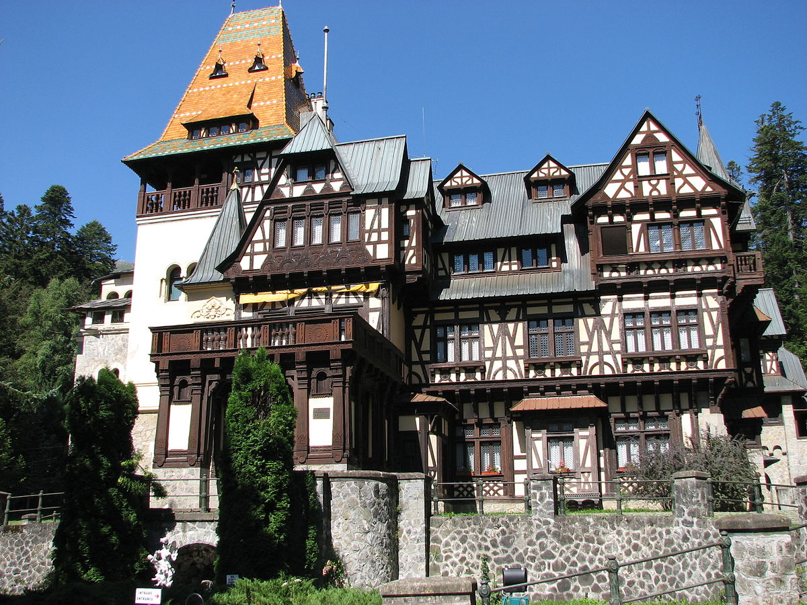
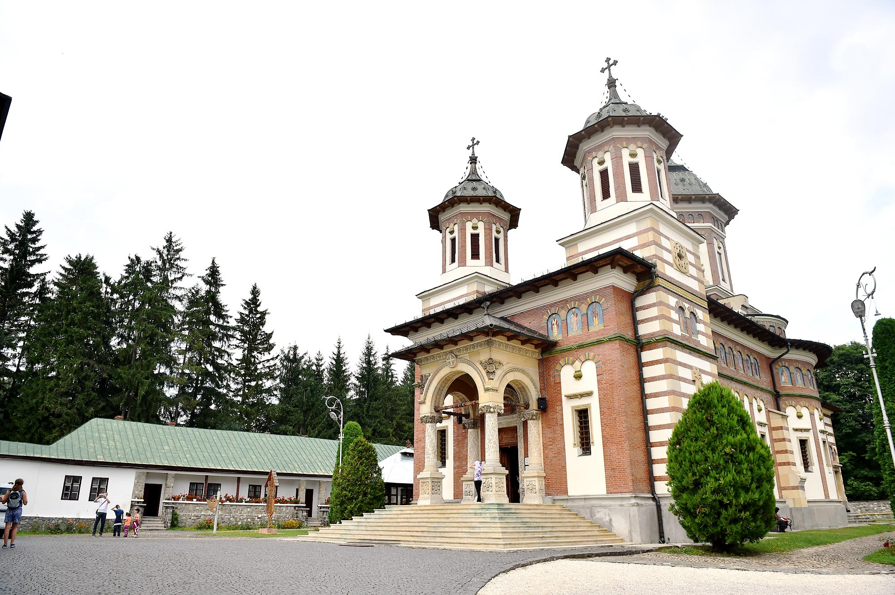
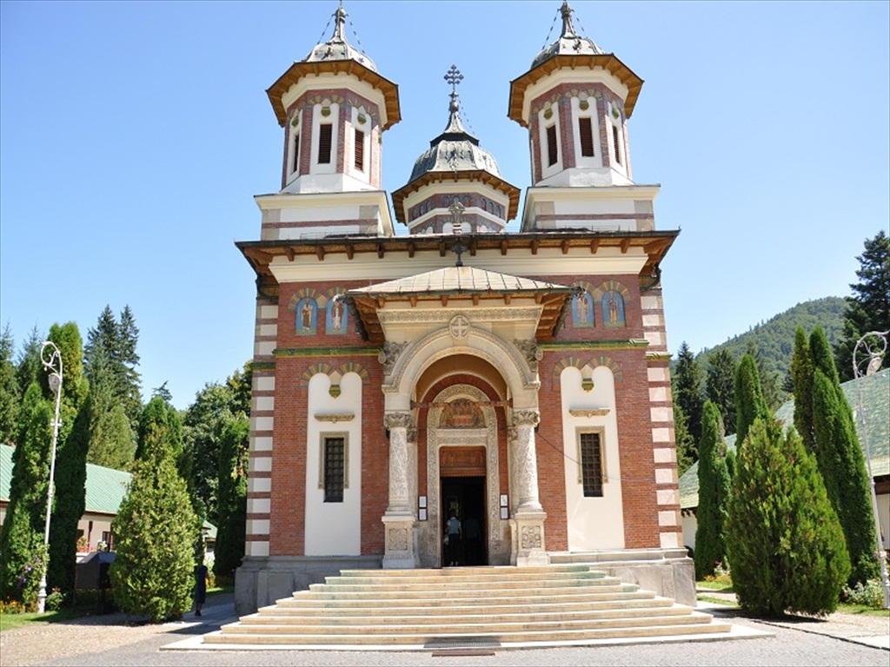
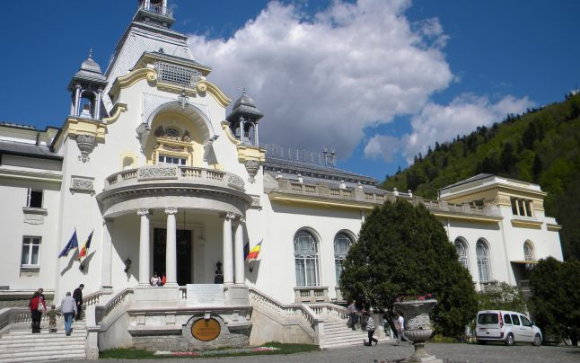

Castelul din Valea Peleș reședința de vară a regilor României, a fost construit pe vremea regelui Carol I al României (1866 - 1914) și a devenit unul dintre cele mai importante monumente ale Europei secolului XIX. Pe terenul cumpărat de rege au fost construite pe lângă castel: Pelișorul, Corpul de Gardă, Economatul, Casa de Vânătoare Foișor, Grajdurile, Uzina Electrică, și Vila Șipot.Până la terminarea castelului (1883), Regele Carol I și Regina Elisabeta, au locuit la casa de vânătoare, terminată înaintea castelului. Având uzină electrică proprie Peleșul a fost primul castel electrificat din Europa. Prin amenajările de după 1900, reședința a fost supraînălțată cu un etaj, de asemenea și turnul principal. În forma sa finală, clădirea cu o suprafață de 3200 mp, are de 160 de camere și peste 30 de băi. În cele 160 de încăperi ale sale castelul a adăpostit una dintre cele mai importante colecții de tablouri din Europa și o bogată colecție de arme, cu peste 4000 de piese europene și orientale, din secolele XIV-XVII
Peleșul a avut o importanță deosebită pentru istoria țării noastre. Aici s-a născut, în 1893, viitorul rege Carol al II-lea (1930 - 1940), primul rege al dinastiei născut pe pământ românesc și primul botezat în religia ortodoxă. În 1921, la Foișor, s-a născut fiul său, regele Mihai I. În 1921, are loc la Peleș, nunta principesei Ileana, una dintre surorile lui Carol al II-lea, la care participă o mulțime de personalități ale vremii, inclusiv Nicolae Iorga. Doi ani mai târziu au loc serbările semicentenarului castelului Peleș (50 de ani de la începerea lucrărilor).
Componența Domeniului Peleș și încăperile castelului:
Castelul Pelisor
Castelul Pelișor este un palat de mici dimensiuni construit pe domeniul castelului Peleș (în valea Prahovei). Ridicat între 1899 și 1902 de arhitectul ceh Karel Liman și decorat de artistul vienez Bernhardt Ludwig, castelul Pelișor a devenit, începând cu anul 1903, reședința de vară a principilor moștenitori ai României.A fost construit din dorința regelui Carol I, ca reședință a principilor moștenitori Ferdinand și Maria.Mobilierul și decorațiunile interioare, realizate în bună măsură de către Bernhard Ludwig, indică un spațiu rezidențial (hall, cabinete de lucru, capela, "camera de aur"), tributar inovațiilor mișcărilor artistice de la începutul secolului al XX-lea.

Apasa aici sa vezi mai mult!
Manastirea Sinaia
Considerata a fi una dintre edificiile de baza ale intregii Vai Prahova, manastirea, ctitorita la finele anilor 1600, a fost ridicata de Mihail Cantacuzino care, dupa ce a fost intr-un pelerinaj pe Muntele Sinai, unde a vizitat impresionanta manastire Sfanta Ecaterina, a hotarat sa faca ceva similar in Sinaia, mai exact la poalele muntelui Furnica.


Cel mai important element al manastirii este portalul bisericii, care infatiseaza pe Moise cu Tablele Legii si pe Aaron, cu al sau toiag infrunzit. In centrul portarului este scultat un vultur bicefal ce tine in gheare sceptrul si crucea, reprezentand stema familiei Cantacuzino, fondatoarea manastirii.
Casa Memorială „George Enescu"
Casa memorială „George Enescu” din Sinaia este un muzeu memorial amenajat în Vila Luminiș, în Cartierul Cumpătu din Sinaia. Vila este realizată în stil neo-românesc în perioada 1923-1926, după planurile arhitectului Radu Dudescu. Aici a locuit și a compus celebrul compozitor român George Enescu începând din anul 1926 și până înainte de a emigra la Paris (1946). Printr-un act de donație, acesta cedează vila statului român, pentru a servi drept casă de odihnă oamenilor de cultură și artă.
Casa Memorială adăpostită în această vilă este deschisă în septembrie 1995, în urma demersurilor unui alt mare maestru al viorii, Yehudi Menuhin, strălucit elev al lui George Enescu. Ea fusese renovată și consolidată în perioada de după 1990, în baza unui proiect susținut financiar de Ministerul Culturii și de Centrul European de Cultură din Sinaia. Începând din anul 2007 ea devine secție a Muzeului Național „George Enescu” din București
Apasa aici pentru a vedea poze cu interiorul casei
Apasa aici pentru a vedea poze cu exteriorul casei
Încăperile de la etaj sunt spaţioase şi confortabile, având interiorul mobilat şi aranjat cu rafinament şi imaginaţie. Aici se reunesc în mod armonios şi original elemente ornamentale şi de mobilier în stilurile românesc, oriental şi Biedermayer. Numeroase piese de valoare din cristal, porţelan, metal sau ceramică dau strălucire interioarelor.
Etajul mansardat a fost adăugat de arhitectul Radu Dudescu, pentru a echilibra verticalitatea turnului în ansamblul vilei. În cele două camere sunt expuse materiale documentare legate de viaţa şi activitatea muzicianului.
Cazinoul din Sinaia
Unul dintre simbolurile staţiunii Sinaia, Casino-ul din staţiune a cunoscut, la începutul secolului trecut, o „viaţă“ efervescentă. De neconceput în zilele noastre, Casino-ul era frecventat de până la 800 de persoane pe zi, aduse de la Bucureşti la Sinaia cu „trenurile plăcerii“. După ce îşi pierdeau banii la ruletă sau chemin-de-fer, femeile îşi jucau chiar şi bijuteriile, perlele şi blănurile, iar bărbaţii ceasurile din aur
Casino-ul din Sinaia este amplasat în partea nordică a parcului „Dimitrie Ghica” din staţiune şi a fost ridicat pe locul unde se afla cândva vila Ghica, prima vilă a staţiunii, înălţată de prinţul Dimitrie Ghica. Contextul în care a fost ridicat are legătură cu ridicarea Castelului Peleş de către regele Carol I şi dorinţa personalităţilor vremii de a fi aproape de familia regală. Protipendada epocii a ridicat numeroase vile şi case de vacanţă în Sinaia, iar construcţia Casino-ului a venit ca o urmare firească pentru distrarea acestora

Voi ati vizitat ale obiective turistice in aceasta locatie? Adaugati mai jos :D